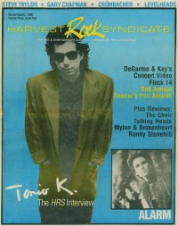

CMnexus
: Contemporary Christian culture, music, and media.
|
Harvest Rock SyndicateSum 1988, vol. 3, iss. 2
| Cover |
|---|
|  | | Writers in this Issue |
|---|
Allison, Kevin
Cleric, Johnny R.
Darden, Kathryn E.
Delaney, Michael
Easterling, Greg
Eischer, Mark
Faris, T. L.
Fincher, Mary Kay
Granger, Thom
Graves, Angie
Newcomb, Brian Quincy
Rice, Brian
Schmitz, Paul A
Strange, Ernest P.
Well, Chris
|
Cover Feature:
- "Leaves From The Notebook of a Tamed Cynic" by Thom Granger
Article:
- "D & K Concert Video" by Kathryn E. Darden
- "Steve Taylor Blew Up Christian Music... Real Good!" by Chris Well
- "The Alarm Make A Stand" by Greg Easterling
- "Mellow Thunder" by Kevin Allison
- "Brave New Flock" by Paul A Schmitz
- "Gary Chapman's Everyday Manner" by Mark Eischer
- "Level Heads Work It Out" by Kevin Allison
Hot Prospects:Tapping The Underground:Metal Shop: Reviews:
- Saint - Too Late for Living by Ernest P. Strange
- Daniel Band - Running Out of Time by Ernest P. Strange
- Neon Cross - Neon Cross by Ernest P. Strange
- Whitecross - Love on the Line by Ernest P. Strange
- Rosanna's Raiders - Calling Down Fire by Ernest P. Strange
- Divine Right - Tongues of Fire by Ernest P. Strange
- Valor - Masquerade by Ernest P. Strange
- various artists - Heavy Righteous Metal by Ernest P. Strange
Critique:Book Review:Relevant LinksYou may be able to find Harvest Rock Syndicate in a library near you: check Worldcat |
|